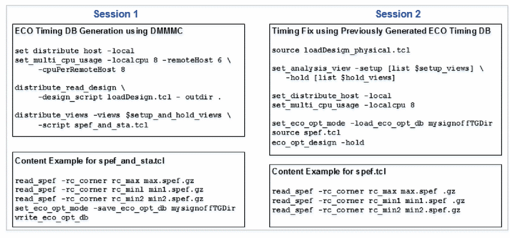
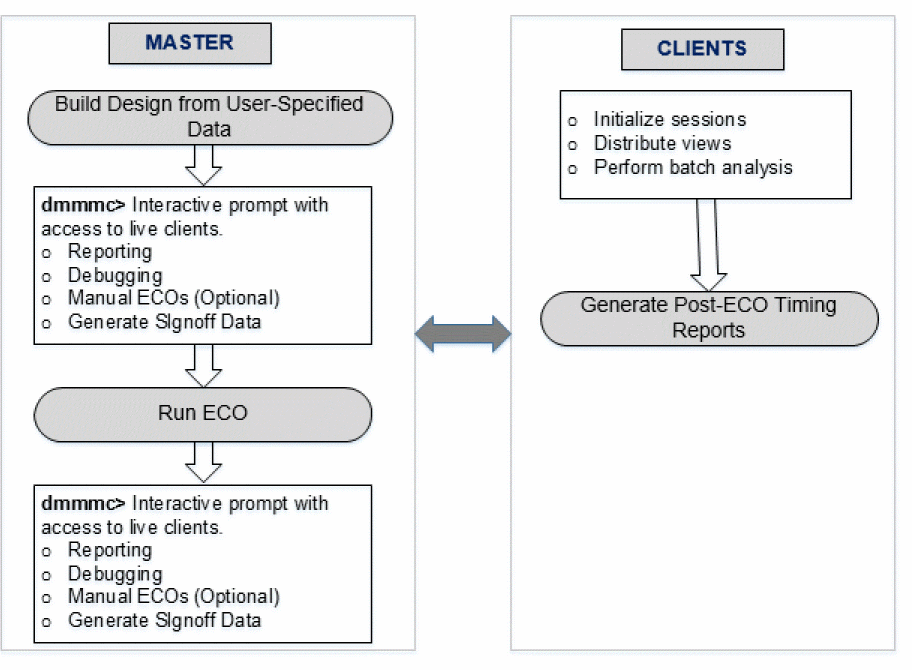
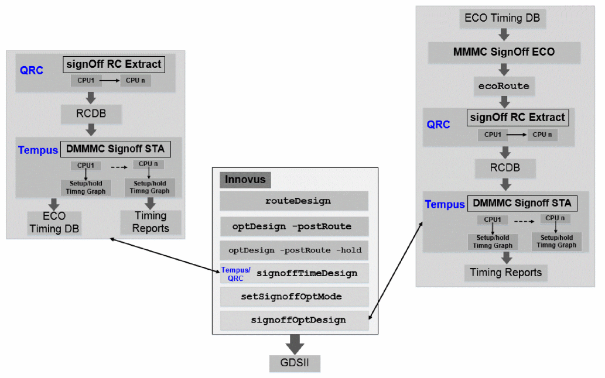
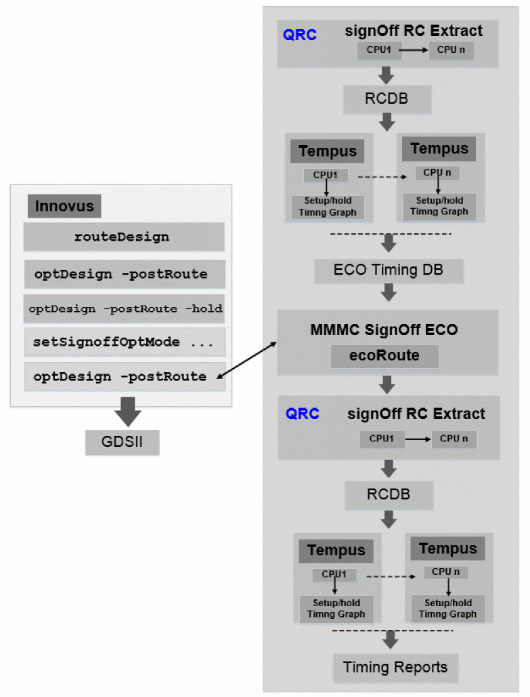

Signoff Optimization Use Models
The following section describes the various signoff optimization use models:
- Generating ECO Timing DB and Running ECO Timing Closure in Separate Sessions
- Running Signoff Optimization with ECO timing generated in batch mode using DMMMC
- Running Signoff Optimization with ECO timing generated using CMMMC
- Parallel Distributed Interactive MMMC Analysis and ECO (Paradime) Flow
- Running Signoff Optimization from Innovus
Generating ECO Timing DB and Running ECO Timing Closure in Separate Sessions
ECO Timing DB is a lightweight timing graph built using the design input data. Since this timing graph is lightweight compared to the complete timing graph and stores only the data that is required for ECO fixing, it reduces the memory.
Within ECO fixing, Timing analysis is based on the hold and setup light-weight timing graph. Evaluation and commit time are also reduced when done on light-weight timing graphs. Therefore, it reduces both memory as well as turnaround time (TAT) significantly.
The write_eco_opt_db command will save the ECO Timing DB after timing analysis, in non-distributed mode or in a DMMMC session. In case several views are active at the same time, ECO Timing DB for each of them will be saved. The data will be saved in the directory pointed to by the set_db opt_signoff_write_eco_opt_db option.
tempus > set_db opt_signoff_write_eco_opt_db mySignOffTGDir
tempus> write_eco_opt_db
This will save the ECO Timing DB information in the mySignOffTGDir directory.
The write_eco_opt_db command is also supported in the concurrent MMMC analysis mode. In addition, ECO Timing DB are saved in a directory that contains all active views' timing graph. So if the ECO Timing DBs are generated in a separate session, you can assemble them by simply copying into the same directory and use the following naming convention:
<topModuleName>_<viewName>.tgd and <topModuleName>_<viewName>.ckd
The below figure shows that in Session 1, the clients performing timing analysis in parallel can be launched on the local machine, but can also be distributed on LSF farm (set_distributed_hosts -lsf).
Figure -2 ECO Timing Closure in Separate Sessions

Running Signoff Optimization with ECO Timing Generated in Batch Mode Using DMMMC
When opt_signoff is called without providing a pointer to ECO Timing DB database through set_db opt_signoff_read_eco_opt_db name, it will automatically generate the ECO Timing DB in batch mode.
Example of Hold fixing with embedded Distributed timing analysis:
read_libs $liberty
read_physical -lefs $lef
read_netlist $netlist
init_design
source viewDefinition.tcl
read_def $def_file
source spef.tclset_distributed_hosts -local
set_multi_cpu_usage -local_cpu 8 -remote_host 2 -cpu_per_remote_host 4
opt_signoff -hold
spef.tcl must contain the read_spef or read_parasitics commands so that every active rc_corner is parasitic annotated.Running Signoff Optimization with ECO Timing Generated Using CMMMC
For small to medium size designs where not many views are active (below 8), you can generate ECO Timing DB in CMMMC and perform ECO fixing in one single Tempus session,
Example of Hold fixing with ECO Timing DB generation and ECO fixing in one single Tempus CMMMC session:
read_libs $liberty
read_physical -lefs $lef
read_netlist $netlist
init_design
source viewDefinition.tcl
read_def $def_file
source spef.tcl
set_distributed_hosts -local
set_multi_cpu_usage -local_cpu 8
set_db opt_signoff_write_eco_opt_db myEcoTimingDB
write_eco_opt_db
set_db opt_signoff_read_eco_opt_db myEcoTimingDB
opt_signoff -hold
spef.tcl must contain the read_spef or read_parasitics commands so that every active rc_corner is parasitic annotated.Parallel Distributed Interactive MMMC Analysis and ECO (Paradime) Flow
The Paradime flow allow you to perform various tasks, such as distributed timing analysis, ECO, and any interactive debugging (such as, reporting, what-if analysis) in a single Tempus session leading to improved usability of the tool. The licensing requirements for this flow require Tempus to be invoked with the -eco license option for performing optimization in addition to the Tempus Distributed Multi-Mode Multi-Corner licensing requirements.
The following diagram shows the launch of the Paradime flow, where Tempus master is used for ECO runs and clients are used for timing analysis runs.

Enabling the Paradime Flow
To enable this flow, you need to make the following setting in the script provided to the Tempus master.
set_distributed_mmmc_mode -eco true
In this flow, the number of remoteHost should be equal to number of views.
Running the Paradime Flow
The Tempus master and clients load the design data for running either of the following flows:
Full Analysis Flow
To run the full analysis flow, you need to make the following settings:
distribute_read_design -design_script design_loading.tcl -out_dir output
distribute_views -script report.tcl -views {view1 view2}
Tempus master launches multiple DMMMC clients to load the design data as specified in design_loading.tcl and run report.tcl in order to perform full timing analysis runs and generate timing reports. Meanwhile, Tempus master also loads MMMC design for all active views of interest.
Once the design loading and timing analysis is done on the clients, the software is available with an interactive dmmmc> prompt with access to live clients. You can do the following:
- Perform merging of report after full timing analysis run or run manual commands to find out critical views of interest.
- Perform interactive querying and debugging on one, few, or all views of clients.
By default, all active views will be specified as setup and hold views for Tempus ECO run on master. If setup and hold views for Tempus ECO run are different, they can be specified using the variables below:
set_db eco_setup_view_list "<list of setup views>" # To specify setup views for ECO run
set_db eco_hold_view_list "<list of hold views>" # To specify hold views for ECO run
# To configure multiple CPUs
set_distributed_hosts -local set_multi_cpu_usage -local_cpu 8 -remote_host 2 -cpu_per_remote_host 8
# To enable the flowset_distributed_mmmc_mode-eco trueset_distributed_mmmc_mode -eco_merge_mmmc
# To specify different Tempus version for DMMMC client runs
set_dbeco_client_tempus_executable"/icd/flows/142_tempus/bin/tempus"
# Variables to specify list of setup and hold view for Tempus ECO (in case different than the views restored on clients). By default, all clients’ views will be in setup/hold view list
set_db eco_setup_view_list "view1"
set_db eco_hold_view_list "view2"
#Variables to specify which view must be taken for power reporting
set_db eco_dynamic_view “view2”
set_db eco_leakage_view “view2”
# Variables to specify physical data
set_dbeco_lef_file_list"tech.lef design.lef"
set_db eco_def_file_list "design.def"
set_db data_dir /a/b/cdistribute_read_design -design_script design_loading.tcl -out_dir eco_restore_output_dmmmc
distribute_views -script report.tcl -views {view1 view2}
report_timing > before_ECO.rpt
opt_signoff -hold
report_timing > after_ECO.rpt
The design_loading.tcl script is the following:
read_mmmc <view definition file>
read_netlist design.v
init_design
The report.tcl script is the following:
read_spef <all corner spef files>
update_timing –full
report* commands (optional)
Restored Analysis Flow
In this flow, saved sessions from individual STA runs are restored. These individual SMSC STA runs have unique view names and are saved in MMMC configuration using a view definition file with a unique library set, delay-corner, rc-corner, constraint-mode, analysis-view, and so on. This flow uses the saved SMSC sessions as clients. This is done by setting up the compatible DMMMC sessions to restore the flow structure, as shown below:
set_db Views [list func_rmax func_rcmin test_rcmax]
distribute_read_design -restore_design $Views -restore_dir <pathname_of_directory_of_saved_session> -out_dir Output
Alternatively, a way to restore saved SMSC sessions is available if sessions are not saved in compatible DMMMC restore flow structure. You can provide a list of sessions’ directories and corresponding view names as input in pairs as mentioned below:
set_db data_dir <unix path>
distribute_read_design -restore_design { {view1 $data_dir/view1/session.enc} {view2 $data_dir/view2/session.enc} ...{viewN $data_dir/viewN/session.enc} } -out_dir Output
Same number of clients are required as the number of sessions to be restored. Each saved session can have data for one MMMC view.
Data from same restored sessions is loaded on the master for all views together. List of setup and hold views for Tempus ECO run can be specified using the variables below:
set_db eco_setup_view_list “<list of setup views>” # To specify setup views for Tempus ECO run
set_db eco_hold_view_list “<list of hold views>” # To specify hold views for Tempus ECO run
All data for master is picked from the saved sessions, including constraints and parasitic information. Only the libraries are picked from the UNIX path that are given in the view definition file because the library data is not saved in saved sessions. In the scenario where there is no common view definition file for restore sessions, you can auto-merge (or concatenate) all the view definition files, and create a single view definition file (which is the superset of all the individual sessions’ view definition files) to load on the master.
If there is no common view definition file, you need to do the following settings:
set_distributed_mmmc_mode -eco_merge_mmmc
# To configure multiple CPUs
set_distributed_hosts -local/-rsh/-lsf … set_multi_cpu_usage -local_cpu 8 -remote_host 2 -cpu_per_remote_host 8
# To enable the flow
set_distributed_mmmc_mode -eco true
# To specify different Tempus version for DMMMC client runs
set_db eco_client_tempus_executable "/icd/flows/142_tempus/bin/tempus" -
# Variables to specify list of setup and hold view for Tempus ECO (in case different than the views restored on clients). By default, all clients’ views will be in setup/hold view list.
set_db eco_setup_view_list "view1"
set_db eco_hold_view_list "view2"
# Variables to specify physical data
set_db eco_lef_file_list "tech.lef design.lef"
set_db eco_def_file_list "design.def
set_db data_dir /a/b/c
# Restoring SMSC saved sessions (not saved in DMMMC compatible directory structure)
# Interactive DMMMC prompt pre-Tempus ECO
dmmmc> report_timing > before_ECO.rpt
opt_signoff -hold
# Interactive DMMMC prompt post-Tempus ECO
dmmmc> report_timing > after_ECO.rpt
Sample Script with Interactive Commands
# To configure multiple CPUs
set_distributed_hosts -local/-rsh/-lsf … set_multi_cpu_usage -local_Cpu 8 -remote_host 2 -cpu_per_remote_host 8
# To enable the flow
set_distributed_mmmc_mode -eco true
# To specify different Tempus version for DMMMC client runs
set_db eco_client_tempus_executable "/icd/flows/142_tempus/bin/tempus" -
# Variables to specify list of setup and hold view for Tempus ECO (in case different than the views restored on clients). By default, all clients’ views will be in setup/hold view list.
set_db eco_setup_view_list "view1"
set_db eco_hold_view_list "view2"
# Variables to specify physical data
set_db eco_lef_file_list "tech.lef design.lef"
set_db eco_def_file_list "design.def"
set_db data_dir /a/b/c
# Restoring SMSC saved sessions (not saved in DMMMC compatible directory structure)
distribute_read_design -restore_design { view1 view2 } -restore_dir $data_dir -out_dir eco_restore_output_dmmmc
# Interactive DMMMC prompt pre-Tempus ECO
dmmmc> report_timing > before_ECO.rpt
# Perform some manual ECOs
dmmmc>eco_update_cellinst1 -up_size
dmmmc> eco_add_repeater -pins inst2/Y -cell BUFX6
dmmmc> set_db opt_signoff_add_inst false
opt_signoff -hold
# Interactive DMMMC prompt pre-Tempus ECO
dmmmc> report_timing > after_hold_ECO.rpt
opt_signoff -setup
Pre-ECO Interactive Shell
After the design loading and analysis (relevant only in full analysis flow) is done on clients, the interactive prompt is available to user. You can do report merge after full timing analysis run or run manual commands to find out critical views of interest. Any pre-requisite commands/setting for Tempus ECO run should be applied by this stage.
Interactive querying and debugging can be done on any number (one, few or all) of clients. To select few views, use:
distribute_command –views { <list of views to select>} { <list of commands>}
If any command (s) are to run on all views, use:
distribute_command { <list of commands>}
Manual ECOs (if any) must be done on Tempus master directly without distribute_command. Netlist update is done for all clients and master database. Tempus software detects if manual ECOs are performed using distribute_command and errors out.
Running ECO
When you run ECO file written by Tempus ECO, it is sent automatically to clients for post ECO signoff timing report generation. On completion of the Tempus ECO run, the master will return to interactive prompt with access to Tempus clients for signoff timing report generation and manual what-if analysis. You can also do successive Tempus ECO runs.
Note that running Tempus ECO as part of the Paradime flow is different from running normal ECO (when invoked from outside this flow) where all the set_db attributes are available in this flow except for the attributes below:
-
opt_signoff_read_eco_opt_db: ECO cannot accept pre-generated ECO Timing DB from outside. -
opt_signoff_write_eco_opt_db: This parameter is ignored and ECO Timing DBs are stored in DMMMC output directory.
Post ECO, you can generate sign-off reports, debugging, perform manual what-if analysis and so on.
Post-ECO Interactive Shell
The interactive prompt after ECO is available to the user. It can be used for generating sign-off reports, debugging, doing manual what-if analysis, and so on. You can also run another Tempus ECO run at this stage.
Use Model
- Master does not have any timing information available. There is check in software to ensure that timer update is never triggered in master session.
-
All timing related queries are to be done from clients using two ways:
-
Use
distribute_commandin non-interactive mode. You can also make selected views active in this mode.distribute_command –views { <list of views | all} -
Use set_distributed_mmmc_mode in interactive mode. You can also make selected views active in this mode.
set_distributed_mmmc_mode[-interactive {true | false} [-views {list_of_views | all}]]
-
Use
- If any command needs to apply to both master and clients, it needs to be specified for both master and clients using separate commands. For example, if you need to specify timing derates, it needs to be done for master as well as clients:
Any settings/commands, which affect timing analysis should be applied to clients using distribute_command { list of commands}
Different Tempus version can be specified for client runs. This is useful in scenarios where timing analysis and ECO need to be run with different Tempus versions.set_db eco_client_tempus_executable "tempus executable path"
Running Signoff Timing/Power Optimization from Innovus
Signoff Timing Optimization feature allows you to run timing and power optimization within Innovus on Signoff parasitic from Quantus QRC and Signoff timing from Tempus. This feature gives a complete automated solution for using the entire signoff tools through one high-level super command.
In a good timing closure methodology, at the implementation stage the timing targets that are set by the signoff Static Timing Analysis (STA) tool should be met. In order to ensure that the design state is close to sign-off quality, the timing reported by the implementation tool must correlate as much as possible to the signoff STA tool. From that stage, signoff timing optimization provides the following features:
- Allows you to run timing and power optimization on signoff timing within Innovus.
- Maximizes the usage of Cadence tools - Innovus will enable you to run extraction (Quantus QRC) and Tempus without extra effort.
-
To provide signoff timing report in Innovus using Tempus, you can use the
time_design_signoffcommand of Innovus. This command uses Quantus QRC and Tempus in standalone mode to perform signoff STA using the DMMMC infrastructure and saves an ECO Timing DB per view. This signoff timing can be optimized usingopt_signoff. Similarly, theopt_signoff command can be used to perform power optimization on this signoff timing.
The following diagram illustrates the flow and the architecture of each signoff command:
Figure -4 Signoff Timing Optimization Flow

In case the ECO Timing DB is not available when the opt_signoff command is run, then the super command will automatically run time_design_signoff, as shown in the figure below:
Figure -5 Signoff Timing Optimization Flow

Signoff Timing Optimization provides a flexible flow to accommodate any specific methodology:
If parasitics should be extracted using TQuantus or IQuantus, this can be done manually by you. Then time_design_signoff can be used with the -report_only option to reuse those parasitics and skip the Quantus QRC call.
In case specific steps/options should be performed before/during Tempus ECO routing, this step can be performed manually after running opt_signoff with the -no_eco_route option.
When specific signoff STA commands/options/attributes should be applied, you can set these in a file and pass it to Tempus through set_db opt_signoff_pre_sta_tcl FILE parameter.
The syntax below is the basic template flow when user runs parasitic extraction and ecoRoute manually:
set_multi_cpu_usage -local_cpu 16 -remote_host 4 -cpu_per_remote_host 4set_db extract_rc_effort_level high
extract_parasitics
time_design_signoff -report_only -report_dir RPT_initial
time_design_signoff -hold -no_eco_route ecoRouteextract_parasitics
time_design_signoff -report_only -report_dir RPT_initial
Related Topics
- Signoff ECO Overview
- Key Features of Signoff ECO
- Signoff ECO Flow
- Setting Up Signoff ECO Environment
- Basic Signoff ECO Optimization Techniques
Return to top